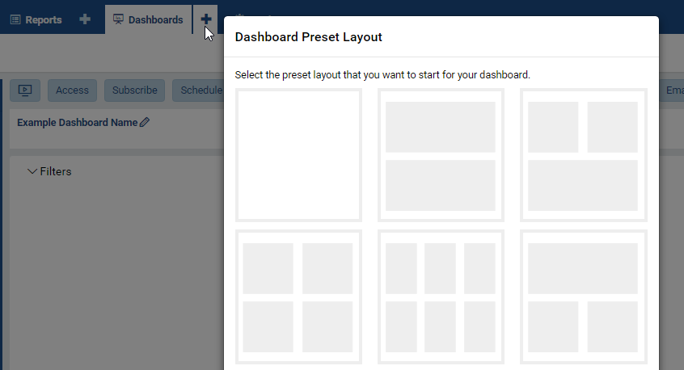
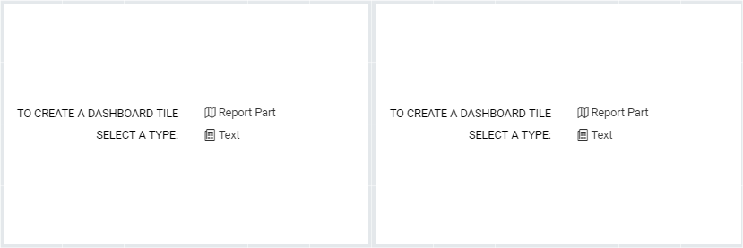
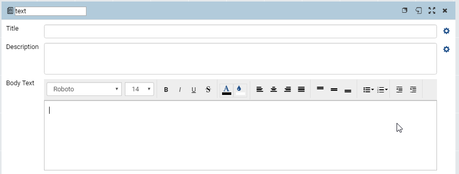
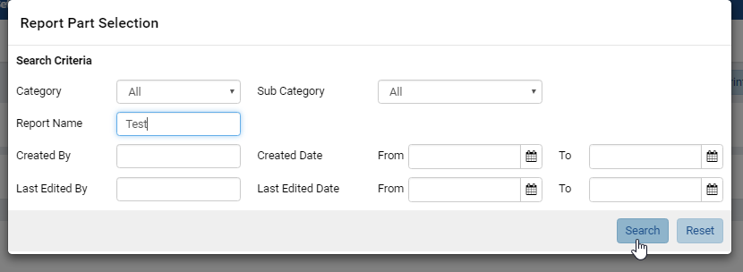
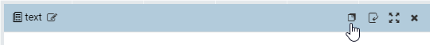
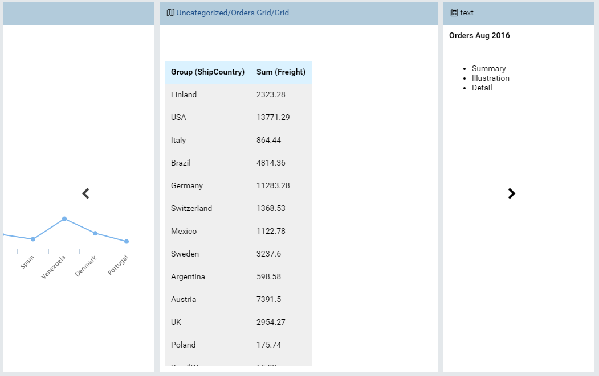
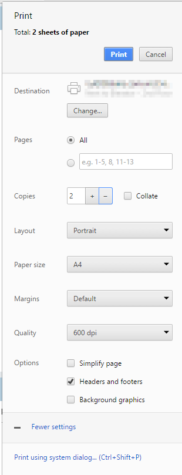
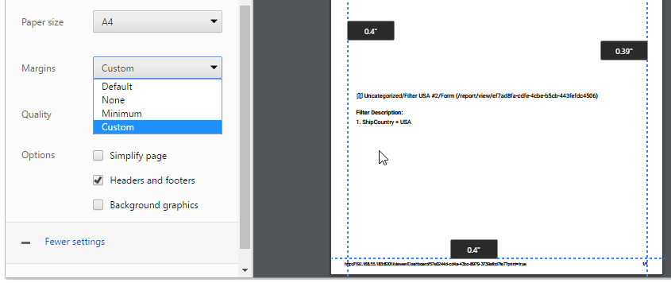

Dashboard Designer¶
The Dashboard Designer page allows user to
|
|
Create a New Dashboard¶
Click the plus icon (+) next to Dashboards to create a new one.
Select a preset layout from the pop-up.
User can always add and remove tiles in the preset layout afterwards.
Fig. 341 Dashboard Add Icon and Preset Layout
Select to either create a “text” dashboard tile or include an existing report part in each one.
Fig. 342 Report Part or Text options
For a “text” dashboard tile, click the Configuration mode (page flip) icon to input the content.
Fig. 343 “Text” Dashboard Tile
- Optionally enter a title and description.
- Click the gear icons (⚙) to format the title and description.
- The title and description are limited to one paragraph of text and
simple formatting:
- font face and font size.
- text effects bold, italic, underlined.
- font color and background color.
- text alignment.
- Enter the content into Body Text.
- This section supports unlimited amount of text and more formatting
options:
- Bullet List and Numbering List.
- Indented text.
For existing report part option, use the Report Part Selection pop-up to search and use an existing report part:
- Optionally specify a report category or sub-category.
- Type a partial text in Report Name to search for the containing report first.
- Other search options include Created By, Created Date, Last Edited By and Last Edited Date.
- Click Search to see the list of matching reports.
- Select a report to display the list of child report parts.
- Select the right report part and click OK to use it.
Fig. 344 Report Part Search
Repeat for other tiles then click Save at the top to save the dashboard.
{kind=link}
{kind=link}
{kind=link}
{kind=link}
Following is a sample dashboard with 3 tiles: a comparison column chart, detail grid and a text part for the summary:
{kind=link}
Fig. 345 Sample Dashboard
Customize Dashboard Layout¶
The dashboard tiles can be added, copied, resized, moved around, swapped in position and deleted.
- 
Fig. 346 Title Bar
Move the cursor over the title bar to see Copy, Configuration/View mode, Fullscreen and Delete buttons.
Switch the tiles back to View mode to be able to change the layout.
Place the cursor over the edges of dashboard tiles then click and drag to resize them.
Move the cursor over the title bar then drag to move the tiles.
Drag a tile onto another to swap them.
Click the Add Dashboard Tile button at the top to insert a new tile at the end.
{kind=link}
Edit Dashboard¶
{kind=link}
Fig. 347 Edit Menu
The Edit menu allows user to:
- Set a description for the dashboard.
- Set background color.
- Set background image:
- Select Set Background Image to open Background Image Settings pop-up.
- Enter the url of the image.
- Choose to stretch or center the image.
- Click OK to close the pop-up.
- Copy or Move dashboard, this is similar to Report (Copy a Report and Move a Report).
- Hide or show report part filter descriptions in dashboard.
Switch to Presentation Mode¶
Click the Presentation button at the top to switch to Presentation mode.
Fig. 348 Presentation Mode
{kind=link}
- In this mode, each dashboard tile takes turn being displayed for a configurable time.
- The sub toolbar allows user to configure the slide transition time and switch to fullscreen.
Note
Using report parts with short data refresh intervals together with presentation mode in fullscreen can effectively make up a live slide show dashboard.
Configure Sharing Access¶
- Click the Access button at the top to open Access screen.
- Click the Add Sharing button to add a new sharing.
- Select either Everyone, Role, or User from the Share With drop-down.
- For Role or User, select a specific one from the drop-down.
- Select a permission from Acces Right drop-down (See details in List of Access Rights table below).
- Click Save button at the top to save the list.
{kind=link}
Fig. 349 Sharing Access
| Interact with shared report | Full Access | Quick Edit | Save As | Locked | View Only | No Access |
|---|---|---|---|---|---|---|
| View the report with filter interaction | ✔ | ✔ | ✔ | ✖ | ✔ | ✖ |
| View the report with NO filter interaction | ✖ | ✖ | ✖ | ✔ | ✖ | ✖ |
| Modify the report in Quick Edit mode | ✔ | ✔ | ✔ | ✖ | ✖ | ✖ |
| Modify the report in Report Designer | ✔ | ✖ | ✖ | ✖ | ✖ | ✖ |
| Save changes in the report | ✔ | ✖ | ✖ | ✖ | ✖ | ✖ |
| Save As changes in the report | ✔ | ✔ | ✔ | ✖ | ✖ | ✖ |
| Access Right |
|---|
| Full Access |
| Quick Edit |
| Save As |
| Locked |
| View Only |
| No Access |
Another function of this screen is to change the Dashboard Owner (next to the dashboard name):
- Click the plus icon to open All Users pop-up.
- Select either User Name, Email Address or Role to search for. Select All to search for all fields.
- Type a partial name into the search box and click the search icon (🔍).
- Only matching users will be displayed.
- Select the user then click OK to close the pop-up.
- Click Save button at the top to save the dashboard together with the owner.
Add Subscriptions¶
- Click the Subscribe button at the top to open Subscription screen.
- Dashboard Subscription is similar to Report List.
- Click the Subscribe button again to close Subscription screen.
Add Scheduled Delivery¶
- Click the Schedule button at the top to open Schedule screen.
- Dashboard Schedule is similar to Report Schedule.
- Click the Schedule button again to close Schedule screen.
Print Dashboard¶
- 
Fig. 350 Print Options
Click the Print button at the top and select either HTML or PDF format to open Print pop-up.
Select print options in the left menu while the print preview is reflected on the right:
Select a target printer using Change button.
Select specific pages to print.
Increase the number of copies, then tick the Collate check-box to have the pages of each copy printed separately, instead of being mixed together.
Select a page layout Portrait or Landscape.
Select a paper size.
Select a margin option. In Custom mode, the margins in preview pane can be resized interactively.
- 
Fig. 351 Custom Print Margins
Select a print resolution in Quality drop-down: the higher the number of dpi, the clearer and more detailed output.
Select to print headers and footers or not.
Select to print background images or not.
For more advanced options, click the link Print using system dialog... to use the system Print dialog.
{kind=link}
{kind=link}
Email Dashboard¶
The dashboard can be delivered via email on-demand (instead of Scheduled Delivery) using the Email button:
- Choose a delivery method Link or Embedded HTML to open Compose Email pop-up with the email template already populated.
- Fill in the To, Subject and optionally CC boxes.
- Optionally select the delivery method Link, Attachment or Embedded HTML.
- Click OK to close the pop-up and send the email.
Dashboard Filters¶
- The filter section on the dashboard will only show common filters between all report parts used in the dashboard.
- By default, common filters are defined as the same field from the same table in the same schema of the database.
- Common filter definitions can be altered in Settings > Data Setup > Advanced Settings > Others area of the application. The following options are available:
- Same field of the same data object from the same database schema (Default)
- Same field name regardless of database schema or connection string
- Same alias name regardless of database schema or connection string
- Stored procedures used in reports cannot follow the same logic as above, they always follow the default logic, for parameters to show as common filters, they must always be from the same stored procedure.
- Any filters which are not common between all report parts are available on the back of the report part tile. The user can flip the tile and update results to change the filters for the specific report part.
- Common filters query only one instance of a common filter (the first one in the dashboard), for data driven filters (checkbox, selection, tree, popup style filters where the user is presented data for selection). This means when Field A is common, based on rules set above, only the first instance of the field which is common will be queried to pull results for common filter data.